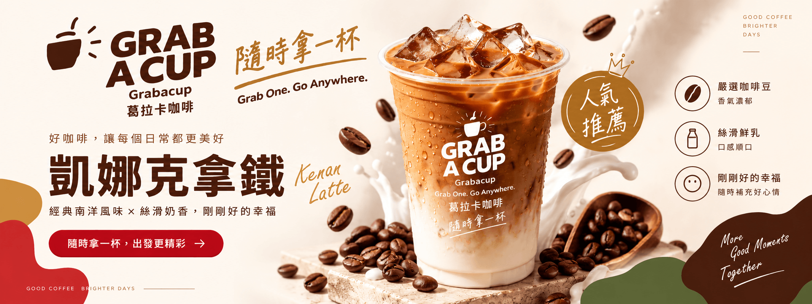

POPULAR PICKS
今天想喝哪一杯？
先用三款飲品建立首頁選購入口，其餘品項集中在產品介紹頁。

人氣推薦
凱娜克拿鐵
經典南洋風味 × 絲滑奶香，適合想來一杯療癒系咖啡的時刻。
查看飲品 →
清爽系
生椰拿鐵
椰香與咖啡交織，帶來輕盈清爽的日常選擇。
查看飲品 →
風味系
開心果瑪奇朵
堅果香氣與咖啡層次交疊，讓一杯咖啡多一點驚喜。
查看飲品 →A CUP FOR EVERY MOMENT
你的一天，總有一刻適合 GRAB A CUP
不同情境、不同心情，都可以找到屬於自己的那一杯。


01
嚴選咖啡豆
讓每一杯都有清楚、舒服、值得記住的咖啡香氣。
02
絲滑鮮乳
用順口的奶香襯托咖啡層次，打造日常也想反覆喝的口感。
03
剛剛好的幸福
不用等特別的日子，一杯咖啡就能替生活補上一點好心情。
GOOD COFFEE · BRIGHTER DAYS
今天，也替自己拿一杯。
從喜歡的風味開始，找到最適合此刻的 GRAB A CUP。
QUICK ANSWERS
葛拉卡咖啡快速解答
用最短時間了解 GRAB A CUP 的產品、價格、購買與門市資訊。
GRAB A CUP 葛拉卡咖啡是什麼？
GRAB A CUP 葛拉卡咖啡是主打方便沖泡的咖啡與特色飲品品牌，提供拿鐵、美式、茶飲與風味系飲品，適合在家、辦公室與旅行途中享用。
目前有幾款飲品？
目前共有 9 款風味，包括水蜜桃烏龍、生椰拿鐵、茉莉奶蓋美式、茉莉輕雪拿鐵、拿鐵時光、胭脂春美式、凱娜克拿鐵、開心果瑪奇朵與綜合莓可可輕乳茶。
商品價格大約多少？
目前單盒售價約 NT$158 至 NT$210，每盒 10 包；各品項的正式售價與購買數量可在商品詳細頁直接查看。
哪裡可以購買或看到商品？
可直接在網站商品頁加入購物車，也可前往門市查詢頁查看全台新光三越相關服務據點。